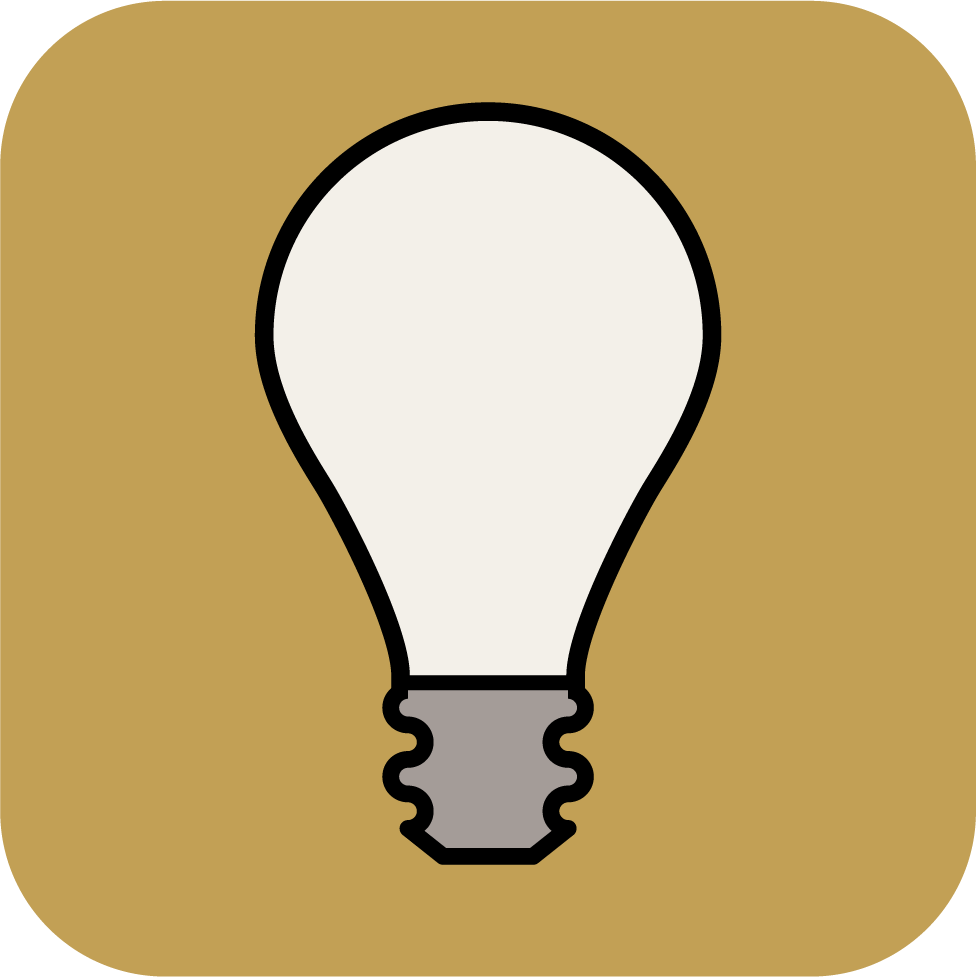
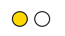
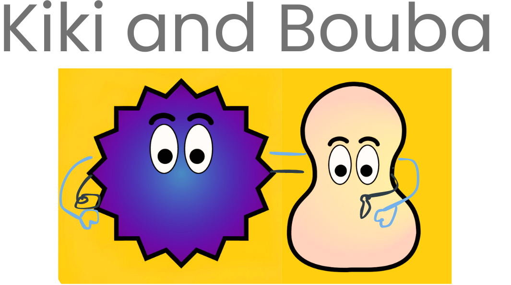
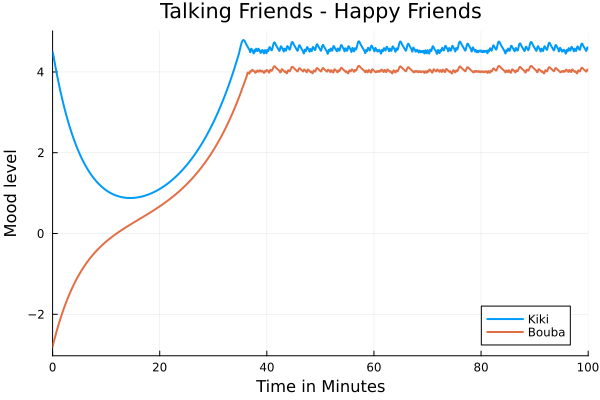
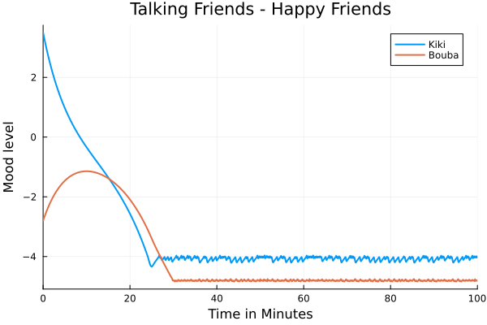
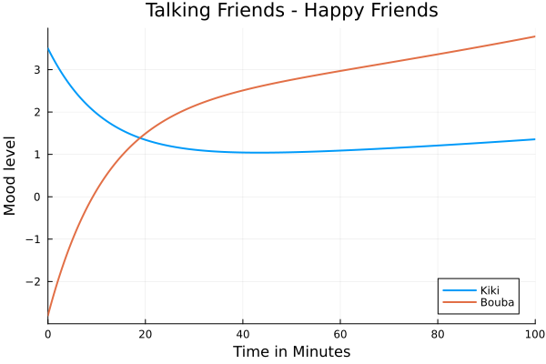
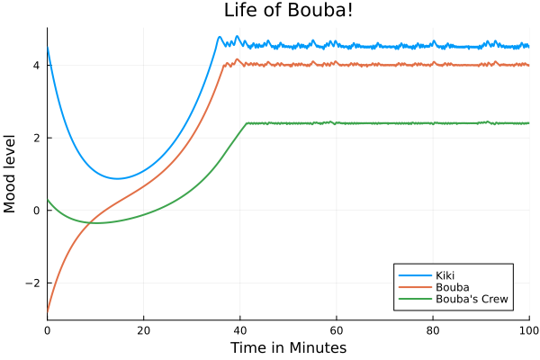

Chapter 2: Dynamical Systems with Kiki and Bouba#
Note
This book is a work-in-progress! We’d love to learn how we can make it better, especially regarding fixing typos or sentences that are unclear to you. Please consider leaving any feedback, comments, or observations about typos in this google doc.
Note
The Algebraic Julia code of this chapter is available in the repo ToposInstitute/RelationalThinking-code under Ch2.
2.1 Introduction#
Kiki and Bouba are great friends, but are quite different characters! It is fun when they meet because Kiki is highly excitable and Bouba prefers to be on the grumpy side! However, they get along with each other quite well! Would it not be interesting to visualize how their mood levels change as they interact?! That is what this chapter is about – visualizing Kiki and Bouba mood levels when they interact using the tools we built in the last chapter!

2.2 Making graphs dynamic#
We start with directed graphs. Each one of the directed graphs we met in the last chapter, “Whose turn is it to do dishes”, or the “Ski trip brochure”, or “Mythological romance”, is a depiction of situations happening over time.
For example, here are few situations based on the “Ski trip brochure”:
Situation 1: A person was at the lodge. They took the lift up the mountain and skied downhill to the village.
Situation 2: A person was at the village. The cross-country skied in the village.
We can manifest these situations by bringing these graphs to life! This means that we can feed the graphs to a computer, and with some additional information, the computer can simulate events indicated by these graphs. These events can be simulated as occuring over a continuous period of time (Kiki and Bouba talking for 60 minutes), or can be simulated as occuring over discrete time steps.
Key point
The additional information has two pieces – for every vertex:
A set of one or more states
An update rule describing the dynamics in each state
We will start with a very simple example, and see show to apply these two pieces of information to a directed graph and simulate an event or dynamics in a computer!
2.3 Light bulbs#
Let’s start with a light bulb (what could be simpler?!).
Single light bulb#
We can model a light bulb using a directed graph with a single vertex and no edge. The light bulb is the vertex.
{kind=link}
This may seem simple – almost trivially simple. What is the point of a graph if it doesn’t even have any edges? Remember, however, that we are only modelling a single light bulb. Bear with us to see how we add states and an update rule to the case of a graph with one vertex. We’ll then move on and see how it extends to situations like a traffic light, where there are multiple lights and hence many vertices and edges in our graph.
A light bulb is always in one of two “states” – either OFF or ON:
{kind=link}
We then add extra data to this vertex called state which gives on ON/OFF condition of the light bulb. At any instant of time, the state value is either ON or OFF.

The above graph can be interpreted as a snapshot of the bulb at an instant in time! The graph has some dynamic nature to it in the sense that the state can be either ON or OFF. However, once set to ON or OFF, the vertex (light bulb) just stays at whatever state we set it to.
Adding state information to the vertices makes a graph slightly dynamic. A directed graph where each vertex has a state is a snapshot of an event in time.
We would like the state of the light bulb to change over time!
Flashing light bulb#
Let us update our model (i.e. our directed graph) to have the light bulb flash on and off, like this:

In order to accomplish this, the light bulb has to toggle its states continously. That is, if the present state is ON, it must switch OFF. If the present state is OFF, it must switch ON. It must perform this operation at every time step. What we described just now is called an update rule – a rule saying how a state is to be updated!
Update rules along along with the states enables a graph to model systems which evolve over time, a.k.a dynamical systems!
Here is how we picture the directed graph and the update rule that models a flashing bulb:

At each time step, the light bulb moves to OFF state if the current state is ON, moves to ON if the current state is OFF!
Given a directed graph, and a state set and an update rule for each of its vertices, we can bring this graph to life. This means that we can simulate it using Algebraic Julia.[1]
Here’s how we encode this update rule in Algebraic Julia:
# Complete code available in the Github - Ch2/flashing-light.jl
# Bulb states
@enum BulbState begin
BULB_ON = true
BULB_OFF = false
end
# Update rule
Transition(state, input, param, t) = [xor(state[1], Bool(BULB_ON))] # toggle bulb state
# Transmission of state information using the arrow
Readout(state, p, t) = state
To simulate the code, we need to provide an initial state (starting state) for the bulb which will then get updated at every time instant as per the above update rule!
initial_state = [BULB_ON] # needs to be an array
The simulation reuslts are exported as an animation showing that our simulation works (using Javis library) as shown below!

Key point
At each time step, an update rule allows states of the vertices to be updated! An update rule acts on the current state(s) at its vertex to produce a new state for the vertex.
String of lights#
A flashing bulb is more exciting than a bulb than never flashes! However, what is more exciting is multiple bulbs “talking” to each and changing their states depending on the information recieved in the time step the information was received.
Suppose, we have a string of two light bulbs in a loop that perform a dance like below:

At each time step, each bulb copies (switches to) the state it recevies from its neighbor and transmits its state to the other neighbor.
The arrow between any two light bulbs serves as uni-directional conduit for state information from its source to its target. At each time step, the current state (of the source) is fed in the arrow (by the source). In the next time step, the state information carried by the arrow is read by the target. The target vertex changes it state based on the incoming state and its update rule.
Key points
The arrow between two vertices serve as a coduit through which state information is transmitted from its source to its target vertex.
The source transmits its state in one time step. The target receives this state information in the next time step.
The target may update its state based on this incoming information.
The graph model looks as follows:

We now have a new update rule:
# Complete code available in Ch2/two-lights.jl
@enum BulbState begin
BULB_ON = true
BULB_OFF = false
end
# Update state to incoming state
Transition(state, input, param, t) = [input[1]]
# transmit current state
Readout(state, p, t) = state
We now have to set the initial states of the bulbs before we can ask the computer to simulate the two light bulbs system for us!
# One bulb is ON and the other bulb is OFF
initial_state = [Bool(BULB_ON), Bool(BULB_OFF)]
Animating the simulation results produces a result as below:
{kind=link}
Puzzle: a different initial state
What if we set the initial state of the both the bulbs to ON? What will be the behaviour of the bulbs over time? (Use the update rule.)
# Both the bulbs are in ON state
initial_state = [Bool(BULB_ON), Bool(BULB_ON)]
Solution
In such case, we get the following result because, each bulb continuously copies the state of the other bulb!

Thus, the behaviour of the system is also determined not just by the update rules but also by initial states.
Key points
Initial states too determine the behaviour of a system!
A traffic light#
Now, imagine adding one more bulb to the above model with the same update rule:

Puzzle: initial state
How would this system behave if we set initial states for the three bulbs as the following?

#full code available in Ch2/looped-light.jl
# Bulb 1 is ON, bulb 2 is OFF, bulb 3 is OFF
initial_state = [Bool(BULB_ON), Bool(BULB_OFF), Bool(BULB_OFF)]
See answer!
The system will be a ‘looped light bulb’ where exactly one light bulb is ON at any instant in time!
{kind=link}
With the idea of 3 stringed lights, we can model a familiar object – a traffic light !! If we relabel our lights RED, YELLOW, and GREEN, then this model simulates the traffic light’s behavior of cycling through green, yellow, red and back to green.

In the last example, each traffic light bulb (red, yellow, green) simply mimics its neighbour to be ON or OFF. This works in most cases! Let us say some accident happens, we want the RED to be ON and the rest of the lights to be OFF! We can handle these cases by introducing a CONTROL vertex, a mastermind which will decide which light bulb must be ON and which light must be OFF at any instant in time.
Let us model a traffic light with a control vertex.

The control vertex has three states:
ON/OFFfor the red light,ON/OFFfor the yellow light, andON/OFFfor the green light.
The update rule for the control vertex is as follows:

Informally, an update is any decision procedure that can be carried out by a computer. We can program the above update rule in Algebraic Julia as follows:
# Complete code available in Ch2/traffic-light.jl
# update rule for indvidual bulbs
BulbTransition(state, input, param, t) = [input[1]]
# update rule for the controller box
ControllerTransition(state, input, param, t) = begin
if(state[1] == true && state[2] == false && state[3] == false) #Red is ON, the rest of OFF
[false, true, false]
elseif(state[1] == false && state[2] == true && state[3] == false) # Green is ON
[false, false, true]
elseif(state[1] == false && state[2] == false && state[3] == true) # Yellow is ON, the rest is OFF
[true, false, false]
else #non-sense
[true, false, false]
end
end
# transmission of state
Readout(state, p, t) = state
We need to set the inital states carefully (in a meaningful way)! We set the controller to begin in ON for the RED light state and OFF for the other two lights (3 states for the controller). For the three light bulbs, we set RED to be OFF, GREEN to be OFF, and YELLOW to be ON. So in the next instant in time, controller will send it current state (RED) to the respective light bulbs and move to the next state of GREEN.
#first three states represent controller, last three states represent initial states of the light
initial_states = [true, false, false, false, true, false]
Simulation of the results creates the following animation of traffic light! We got our initial states right!!

Key point
Different vertices may have different update rules for its states. Setting initial states carefully is important to simulate a meaningful behavior!
2.4 Kiki and Bouba#
Now for the grand finale, we are ready to build a model of Kiki and Bouba’s interaction and visualize their mood levels!
Let us recollect what we have seen so far:
In the model of the flashing light bulb, (at each time step) each vertex updated its state based only on its current state.
In the model of the string of lights, (at each time step) each vertex updated its state only based on the state received from its neighbour.
In the model of the traffic light, (at each time step) the controller updated its state only based on its current state. The light bulbs updated their states only based on the input received from the controller.
The talking friends model will have slighty different features:
In this model, we will see that each vertex will update its state based on both its current state as well as the incoming state.
Here’s the story of Kiki and Bouba (recollected from introduction): “Kiki and Bouba are great friends but are quite different characters! It is fun when they meet because Kiki is highly excitable and Bouba prefers to be on the grumpy side! However, they get along with each other quite well! Would it not be interesting to visualize how their mood levels change as they interact?!”
{kind=link}
Let us get creative and sketch out some details of their interaction – what are the states and the update rules?
Kiki and Bouba by themselves#
Let us start with a single person - either Kiki or Bouba - and see how their mood will change over time when they are by themselves.
Each one of them can show a range of emotions, from grumpy to happy.

Let us rate these emotions on a scale -5 to +5:


As with the bulb, we model Kiki and Bouba by themselves as a graph with two just vertices. The state of each vertex is called “Mood level”.

As mentioned earlier, the mood level can be anywhere between -5 to +5.
The update rule is that whatever mood Kiki and Bouba start with, they calm towards the neutral mood at their own rates. The calm down rate is called a parameter. We can think of a parameter as a weight assigned to a particular value used in the computation. In this case, calm down rate acts as a weight for the person’s mood level.
The update rule is coded as follows:
# complete code available in Ch2/Kiki-bouba-standalone.jl
# change in mood level = -(current mood level x calmdown rate)
# pay attention to the negative sign in the front;
# negative sign because it is calm "down" rate and not calm "up"
# here, change in mood is the amount by which the mood moves towards zero
dotmood(mood, input, param, t) = [ - (mood[1] * param.calmdown_rate[1]) ]
We set the initial mood of Kiki to 4.5 and Bouba to be -4.5. We set their calmdown rates to be 5% (0.05) for Kiki and 3% (0.03) for Bouba.
initial_moods = [4.5, -4.5]
params = LVector(calmdown_rate=[.05, .03])
Are you ready to visualize their mood change when they are by themselves?

As we see, their moods move towards 0 (neutral) with no external stimulus!
Food for thought
The moods will never become zero! Can you see why?
Kiki and Bouba talking to each other#
Kiki and Bouba met at a restaurant for dinner! It looks like they both had a long day! Let us see how these two friends affect each other’s mood! Are they going to go back home happier or grumpier?
To answer this question, we will modify our model of Kiki and Bouba by themselves (a graph with just two vertices) to allow for their interaction. The updated model is as follows:

The arrow from Kiki to Bouba allows Kiki’s mood to be fed into Bouba system. The arrow from Bouba to Kiki allows Bouba’s mood to be fed into Kiki’s system. Recall, arrow = conduit for state information.
Now that we have extra state information flowing into the vertices, we would need to modify our exisiting update rule too!
By our current update rule, Kiki and Bouba’s mood changes only as per the calm down rate:
Stand-alone Kiki and Bouba update rule
change in mood level = -(current mood level x calmdown rate)
Let us update this rule to include the other person mood too when producing a new mood level (for either Kiki or Bouba)! For this, we make up the following dynamics:
At each instant in time, Kiki imbibes a certain fraction of other Bouba’s mood based on Kiki’s susceptibility factor. Similarly, Bouba imbibes a fraction of of Kiki’s mood based on Bouba’s susceptibility factor. So we got a parameter called suspectability factor in the new update rule.
Suppose either Kiki or Bouba reach their maximum tolerance of excitment or grumpiness, then they refuse to listen to the other person so that they can calm down! This will add two more parameters to the update rule to consider namely maximum excitment tolerance: and maximum grumpiness tolerance.

Here is a mathematical representation of the above dynamics:

Here is the code for the new update rule that Kiki by the above diagram. The logic of updating Bouba’s mood is the same.
# Complete code available in Ch2/Kiki-Bouba-talking.jl
# Update rule for Kiki's mood level
dotmood_Kiki(mood, input, param, t) = # [ - mood[1] * param.calmdown_rate[1] ]
begin
if ( mood[1] <= param.grumpiness_tolerance[1] || mood[1] >= param.excitement_tolerance[1] )
[ - (mood[1] * param.calmdown_rate[1]) ] # pay attention to the negative sign in the front; here, change in mood is the amount by which the mood moves towards zero
else
[ input[1] * param.susceptability[1] - mood[1] * param.calmdown_rate[1] ]
end
end
It’s time for visualization of change in mood! :) Let us set the initial mood of Kiki and Bouba, their susceptability factors, and their tolerance levels.
# Kiki is super-excited with mood level of 4.5.
# Bouba is a bit grumpy with mood level of -2.8.
initial_moods = [4.5, -2.8]
# Each parameter has two values - first one for Kiki and the second one for Bouba!
params =
LVector(
susceptability=[0.2, 0.1],
calmdown_rate=[.05, .03],
grumpiness_tolerance=[-4,-4.8],
excitement_tolerance=[4.5,4])
Here is the plot showing how Kiki and Bouba’s moods oscillate over a 100 minutes conversation! They seem to struggle for the first 30 minutes with Kiki losing her excitment steadily. However, their moods meet somewhere above zero and they happily seem to resonate at their maximum excitement levels from there on!
{kind=link}
What happens if Kiki and Bouba start at different initial moods?
Let us make Kiki slightly less excited!
# Kiki is kinda-excited with mood level of 3.5.
# Bouba is a bit grumpy with mood level of -2.8.
initial_moods = [3.5, -2.8]
This seems to be a little of bad news!
{kind=link}
Can we make this situation better for the friends by reducing Kiki’s susceptability factor?
Let us reduce Kiki’s susceptability factor from 0.2 (20%) to 0.02 (2%).
initial_moods = [3.5, -2.8]
# Kiki's susceptability reduced to 2% from 20%
params =
LVector(
susceptability=[0.2, 0.1],
calmdown_rate=[.05, .03],
grumpiness_tolerance=[-4,-4.8],
excitement_tolerance=[4.5,4])
Our solution seems to be working!!
{kind=link}
Chef Bouba and his helpers#
Let us make things a little spicier! Bouba is actually a chef and he has a small crew to help him in his business. Bouba’s mood affects his crew but Bouba being their boss, Bouba’s crew disperse of the mood among themselves, and do not transmit their mood to Bouba. This interaction added to the model looks like this now:

The mood level of Bouba’s crew is updated using the same logic as above! The crew as a single entity has a susceptablity factor, a calm down rate, and tolerance levels.
# Complete code available in Ch2/Kiki-Bouba-Crew.jl
initial_moods = [4.5, -2.8, 0.5] # Kiki, Bouba, Group
params = LVector(
susceptability=[0.2, 0.1, 0.5],
calmdown_rate=[.05, .03, 0.01],
grumpiness_tolerance=[-4,-4.8, -3.5],
excitement_tolerance=[4.5,4])
The change in mood level of Kiki, Bouba, and Bouba’s crew over 100 minutes!
{kind=link}
2.5 Summary#
The purpose of this chapter is having fun with graphs by bringing them to life! Using directed graphs, we modeled systems which evolve over time! These systems are known as dynamical systems. We exported our models of dynamical systems to a computer as programs in Algebraic Julia. Using these programs, we visualized the evolution of these systems using plots and animations!
We modeled two broad class of systems:
Discrete systems: All the systems in Section 2.3 (Light bulbs) fall under this category! Every light bulb and traffic controller has binary states - the value is either
ONorOFF.Continous systems: All the systems in Section 2.4 (Kiki and Bouba) fall under this category! The state can vary continously between -5 and +5. There are infinite number of values between -5 and +5.
When modelling dynamical systems, we treated underlying graphs are blue prints. These graphs are special in the sense, they come with two pieces of information:
One or more states for each vertex
An update rule for each state
The arrows in the graph acts as a conduit carrying state information from one vertex to another. Each vertex is a (little) system within the larger system.
For readers who are interested to explore further about using AlgebraicJulia to model dynamical systems and viewing more sohpisticated examples, we recommend the documentation for AlgebraicDynamics package of AlgebraicJulia!
Dynamical systems and directed graphs are a useful framework for modeling the world around us. Indeed, they are a close match for how humans tend to conceptualize things – in terms of cause and effect, in terms of events which play out over time, and in terms of systems influencing one another!
Cause and effect is just one way of looking at the world. And not all systems are best understood in this sense. There are systems that maintain a kind of equilibrium by satsifying simultaneous constraints. In the coming chapters we will develop this relational view, a subtle and versatile way of working with graphs having an emphasis on constraints and filters instead of step-by-step procedures.